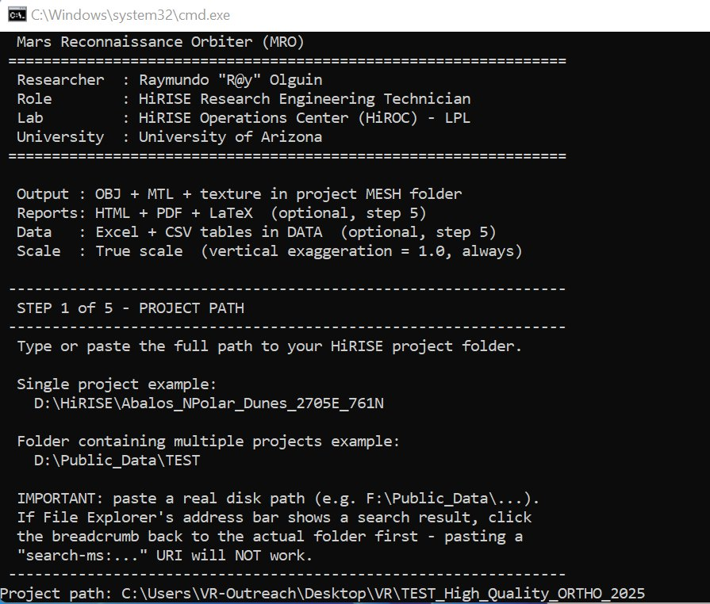
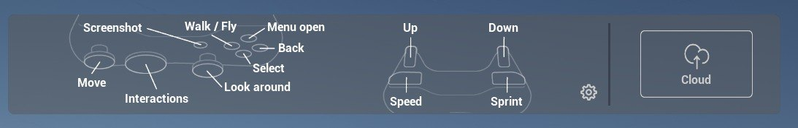

Appendices
The HiRISE 3D Topographic Reconstruction Pipeline (obj_pipeline v6.3.9) in detail: how the orthoimage texture is selected, how the downsampling factor is set by the triangle budget, what each output folder contains, and how the RUN.bat front end works. Summarised from the HiRISE Ortho Selection page, the HiRISE Pipeline Anatomy and the Pipeline User Manual by Raymundo "R@y" Olguin, HiRISE Operations Center (HiROC) and Space Imagery Center (SIC), Lunar and Planetary Laboratory, University of Arizona.
AChoosing the orthoimage
Several orthoimages, one surface. The ground sample distance blurs the ground, and the emission angle e displaces it horizontally wherever the DTM height is slightly off. Both are errors in metres on the ground, so they add in quadrature, and the smallest total wins.
E = √( g² + (Δz · tan e)² )
g is the ortho grid (0.25, 0.5 or 1.0 m). Δz is the terrain's expected vertical precision: 0.3 m at 1 m posts, 1.0 m at 2 m posts (Sutton et al. 2022). An image with a data gap or known spacecraft jitter is pushed out first, and scores within 5 % go to the lower emission angle, then to fewer saturated pixels, then to higher coverage. The README "RMS z" is not used as Δz: it is the residual of the tie to MOLA, not the vertical precision of the DTM.
Image 1
Image 2
The full method, its seven steps and the papers behind each one: HiRISE Ortho Selection. The thresholds (1 point coverage tolerance, 5 % tie band, Δz values) are this pipeline's synthesis, not published HiROC thresholds.
BThe triangle budget
The mesh is a regular grid: one vertex per sampled DTM post, one quad per square of four valid posts, split into two triangles. A 1 m HiRISE DTM is typically a few thousand posts wide and tens of thousands tall, so the pipeline keeps every s-th post on both axes (the downsampling factor). AUTO picks the smallest s whose exact triangle count fits the budget B = 10,000,000.
T_full = 2 (H − 1)(W − 1) s = ⌈ √( T_full / B ) ⌉, while T(s) > B: s ← s + 1
Triangle budget
Same formula as compute_downsample(); counts assume every post is validCOutputs
Folder layout of a processed project, the mesh coordinate conventions, and how to open the results in other software (Pipeline User Manual, Chapter 6).
<project>/
GeoTIF/ <id>.TIF from DTM/<id>.IMG
MESH/ <id>_Mesh01.obj, <id>_Material_01.mtl,
<id>_Texture01.png|jpg
<id>_Mesh01.ply / .fbx / .glb / .usdz
<id>_TEXTURE_LINK.txt
JP2_CONVERTED/ PNG or JPG transcode of the selected ORTHO JP2
ORTHO_SELECTION.csv (every candidate and the decision)
Report/ <id>_Technical_Report01.html, 02.pdf, 03.tex
DATA/ XLSX / CSV planetary-science exports
EXTRAS/ caches, e.g. PDS_INDEX_ROWS.json
Twinmotion/ staging folder created for XR delivery
| Property | Value |
|---|---|
| Units | 1 mesh unit = 1 projected map metre |
| Origin | A projected point recorded in DATA (Mesh origin); (0, 0) in every 3D file |
| Up axis | OBJ and PLY: Z-up. FBX, GLB and USDZ: Y-up |
| Vertical exaggeration | 1.0 (true scale) unless changed on the command line |
| FBX scale | UnitScaleFactor 100 (FBX counts in centimetres; mesh is in metres) |
| Texture | OBJ: separate PNG/JPG next to the MTL. GLB and USDZ: embedded |
Opening the meshes in other software
Section 6.3| Application | File | How |
|---|---|---|
| Blender | OBJ | File > Import > Wavefront (.obj). Set Up Axis = Z and Forward Axis = Y (the defaults, Forward -Z / Up Y, would tip the terrain on its side). |
| Blender / Twinmotion | GLB | Drag and drop. The orthomosaic is embedded and applied on import. |
| Unity / Unreal / Maya | FBX | Import as a static mesh; assign the texture from MESH/ if the engine does not pick it up. |
| MeshLab / CloudCompare | PLY | Open directly; UVs are stored as s,t. |
| Apple Vision Pro | USDZ | Copy to the Files app (AirDrop, iCloud Drive). Tap the file; Quick Look opens it in 3D. |
Equirectangular HiRISE DTMs are true to scale only at the projection's centre latitude. Mesh X/Y stay in projected map metres; the reports and DATA tables convert slopes, areas and roughness to ground metres with the scale factor k = cos(φ₁)/cos(φ) (Snyder, 1987).
DRUN.bat, screen by screen
The HiRISE 3D Topographic Reconstruction Pipeline (obj_pipeline v6.3.9) is run from a five-question Windows wizard that processes one project or a whole dataset, writes OBJ, PLY, FBX, GLB and USDZ, and adds technical reports and data tables.
RUN.bat, screen by screen
A dataset folder holding 15 projects
Wizard answers for common jobs
| Job | Step 2 | Step 4 | Step 5 | Menus |
|---|---|---|---|---|
| Quick look | 8 | 1 | n, n | OBJ, JPG |
| Twinmotion delivery | Enter | 1 | n, n | GLB, JPG |
| Apple Vision Pro | Enter | 2 | as needed | none |
| Full science package | Enter | 3 | Enter, Enter | none |
| .IMG to GeoTIFF only | Enter | 4 | skipped | none |
Seven stages per project
| 0 | Each DTM .IMG becomes a lossless GeoTIFF |
| 1 | GDAL reads the terrain, its georeferencing and centre |
| 2 | Elevation statistics; empty cells removed |
| 3 | Downsampled mesh at vertical exaggeration 1.0 |
| 4 | Chosen ortho to PNG or JPG; UVs from its georeferencing |
| 5 | OBJ, PLY, FBX, GLB, USDZ; texture links verified |
| 6 | Reports in HTML, PDF, LaTeX; tables in XLSX, CSV |
Every stage, module, formula and dependency is explained in the interactive HiRISE Pipeline Anatomy; operation is covered in the Pipeline User Manual.
EThe front end, in detail
Everything an operator sees and types, from installation to the last line of the console, summarised from the Pipeline User Manual (v6.3.9).
Step through RUN.bat
The five questions, two menus and console blocks with the Gully Monitoring DTM; each parameter is explained on the right.
1. Install once: SETUP.bat
Copy the HiRISE_Pipeline folder to the computer (code only, never a conda environment), double-click SETUP.bat and press Enter at each question. About 400 MB is downloaded the first time; no admin rights are needed. Afterwards, RUN.bat is all you use.
| Setup step | What happens |
|---|---|
| 1 Miniforge | Uses an existing conda, or downloads Miniforge, checks its SHA-256 and installs it for your user only |
| 2 Environment | Creates hirise-pipeline from an exact lock file (117 packages with checksums); falls back to environment.yml |
| 3 Command | Optional pip install -e ., which adds a hirise-pipeline command |
| 4 RUN.bat link | Saves HIRISE_PYTHON so RUN.bat always uses this environment |
| 5 Versions | tools\check_env.py prints pinned vs installed versions and the JP2OpenJPEG, PDS, GTiff, PNG, JPEG drivers and PROJ |
| 6 Tests | Runs five test suites (smoke, math, ortho selection, GeoTIFF export, emission lookup) and prints PASS or FAIL |
Options: SETUP.bat /yes takes every default, /rebuild rebuilds the environment, /notests skips step 6. Everything is logged to SETUP_LOG.txt. Pinned versions include Python 3.12.15, GDAL 3.13.3 with libgdal-jp2openjpeg, NumPy 1.26.4, ReportLab 5.0.1 and XlsxWriter 3.2.9. On macOS or Linux, create the environment from the matching lock file with conda.
RUN.bat then uses the first Python that can import osgeo.gdal: the HIRISE_PYTHON variable, then a hirise-pipeline conda environment, then OSGeo4W, then py -3 and python. The one it picked is printed in the RUNNING PIPELINE block.
2. Prepare the data
Give the wizard one project folder, or a parent folder of many projects (the console then reports Mode: DATASET and runs them one after another).
<Project_Name_LLLLE_LLLN>/ DTEEC_<obs1>_<obs2>_A01.TIF DTM GeoTIFF (root, DEM/ or DTM/), or DTM/DTEEC_..._A01.IMG (+ .LBL) PDS3 DTM, converted in stage 0 *_RED_A_01_ORTHO.JP2 orthos (A, B or C grid; RED and IRB) *.LBL labels with EMISSION_ANGLE, MRO:BINNING README / *.txt producer README JITTER.txt optional: observation IDs with known jitter
Only the DTM is required. Folder names carry an approximate location, read with one rule: a 4-digit longitude and a 3-digit latitude, both in tenths of a degree, east-positive. 1546E_049S means 154.6° E, 4.9° S; 1546E_493S would mean 49.3° S. The authoritative centre always comes from the DTM through GDAL, and Stage 1 warns when the two disagree.
Emission-angle labels and the manifest are found through HIRISE_EMISSION_LABELS_ROOT and HIRISE_EMISSION_MANIFEST, then a HiRISE_Emission_Labels folder next to the dataset, then C:\Public_Data\HiRISE_Emission_Labels and the same folder on D:, E:, F:.
3. The five questions
| Step | Prompt | Answers | Default |
|---|---|---|---|
| 1 | Project path | Paste a folder path; quotes are removed. Rejected: empty, a Windows Search result (search-ms:), any URI, a missing folder or a file | none |
| 2 | DTM downsampling | Enter = AUTO from the 10,000,000-triangle budget; 1 = native (100 % of vertices); 2 = 25 %; 4 = 6.25 %; 8 = 1.56 %; any whole number works; text falls back to AUTO | AUTO |
| 3 | Full precision? [y/N] | N = compact (vertices to 4 decimals, UVs to 6, no normals); y = 9 decimals plus normals, 3 to 4 times larger | N |
| 4 | Output mode | 1 Standard (two menus follow); 2 Apple Vision Pro (one USDZ with the native PNG texture); 3 All formats with PNG; 4 GeoTIFF only (skips step 5) | 1 |
| 5 | Reports? Data tables? | Enter = yes, n = no. Meshes are always written. Typical run on the 12.5 M-post benchmark: about 17 s with neither, 26 s with both | yes / yes |
| Format menu | Best for |
|---|---|
| 1 OBJ (+ MTL + texture) | Blender, GIS, universal exchange |
| 2 PLY, binary | MeshLab, CloudCompare |
| 3 FBX 7.4 | Unity, Unreal, Maya |
| 4 GLB, texture embedded | Twinmotion, Blender, WebXR |
| 5 USDZ, texture embedded | Apple Vision Pro, AR Quick Look |
| 6 ALL | Archival, multi-platform delivery |
| Texture menu | Use |
|---|---|
| 1 PNG, lossless, native grid | Photometric inspection, archival |
| 2 JPG, quality 95, 4:4:4, about 10× smaller | VR and Twinmotion delivery |
JPG cannot store an axis longer than 65,500 px, so a longer ortho is Lanczos-resampled; PNG keeps the native grid. Both menus accept only the listed numbers, and Ctrl+C cancels cleanly.
--overwrite, so existing meshes and reports are replaced (GeoTIFFs only with --geotiff-overwrite). Use the command line to keep earlier outputs.4. Reading the console
| Block | What to read in it |
|---|---|
| RUNNING PIPELINE | The Python that will run, the input path, the downsampling factor, reports and data choices. Check it before walking away |
| PIPELINE CONFIGURATION | Error log path, timestamp, input root, triangle budget, vertical exaggeration (always 1.0×), OBJ precision, texture encoding |
| EMISSION MANIFEST | Where the manifest was found and how many entries it loaded |
| PROJECT DISCOVERY | Single project or dataset; one line per project with its DTM. Folders named ortho, texture, browse, rgb, color, thumbnail or quicklook are skipped on purpose |
| OUTPUT DIRECTORIES, STAGE 0 | The MESH, JP2_CONVERTED, Report and Twinmotion folders; .IMG files converted or already done |
| ORTHO SELECTION | JP2 inventory by band and grid, one row per candidate with grid, role, emission angle, coverage and score E, then SELECTED and FINAL TEXTURE |
| STAGES 1 to 4 | Raster size and post spacing, projection, GDAL centre and the folder-label check; valid fraction (about 0.75 is normal for a slanted strip) and elevation range; downsampling, triangles, retention; texture written and its emission angle |
| STAGE 5, STAGE 6, COMPLETE | Every file with its size and the OBJ to MTL to texture check; reports and tables or "skipped"; per-stage times and ALL STAGES NOMINAL |
| PIPELINE COMPLETE | Projects run, elapsed time (15 projects in 63.1 s in the test run) and the error log path |
| Ortho role | Meaning |
|---|---|
| native | On its image's native grid; eligible to win |
| backup | Usable but coarser, unrecognised grid, or more than 1 point below the best coverage; tried only if every native candidate fails |
| rejected | IRB colour product, unreadable or blank, or a finer grid that only interpolates |
5. After every run: a 30-second check
- Scroll the console for any warning symbol and read the line beside it.
- Open
pipeline_errors_<timestamp>.login the input folder; an almost empty log is a good sign. - Open one MESH folder: mesh, MTL and texture should all be there with sensible sizes.
- Open
JP2_CONVERTED\ORTHO_SELECTION.csvto see why a texture was chosen. - Load one mesh in the target application.
FCommand line, reports and verification
Everything the wizard does can be scripted, every run can write three technical reports and a set of data tables, and a set of tools checks the installation and the outputs against independent sources. Summarised from the Pipeline User Manual (v6.3.9), Chapters 6, 7 and 9.
Three ways to start it
Section 7.1RUN.bat --input "D:\Public_Data\TEST" --formats usdz --ortho-format png python -m obj_pipeline --input <folder> [flags] (from HiRISE_Pipeline) hirise-pipeline --input <folder> [flags] (after pip install -e .)
Any argument given to RUN.bat skips the wizard and goes straight to the pipeline. If --formats or --ortho-format is left out, the pipeline shows that menu; in scripts (with --formats) a missing --reports or --data simply means yes.
Flags
Section 7.2| Flag | Default | Meaning |
|---|---|---|
| --input PATH | required | Single project folder or a parent of project folders |
| --formats F [F ...] | menu | obj, ply, fbx, glb, usdz (aliases applevision, vision, visionpro) or all |
| --ortho-format png|jpg | menu | Texture encoding: PNG lossless or JPG about 10× smaller |
| --downsample N | auto | Keep every N-th DTM post on both axes; omit to fit the triangle budget |
| --tri-budget N | 10,000,000 | Triangle budget for the automatic downsampling factor |
| --vertical-exaggeration X | 1.0 | Keep at 1.0 for true scale |
| --overwrite | off | Replace existing meshes and reports |
| --reports yes|no, --no-reports | yes | Technical reports in Report/ |
| --data yes|no, --no-data | yes | Data tables in DATA/ |
| --geotiff yes|no | yes | Convert each DTM .IMG to GeoTIFF first and read the DTM from it |
| --geotiff-only | off | Only convert DTM .IMG files to GeoTIFF for the whole input |
| --geotiff-validate-only | off | Only print the COMPLETE / PARTIAL / EMPTY report |
| --geotiff-workers N | 0 (half the cores) | Parallel GeoTIFF conversions |
| --geotiff-overwrite | off | Rewrite existing GeoTIFFs |
| --jitter-obs ID [ID ...] | none | Observations with known jitter; their orthos are a last resort |
| --jobs N | 0 (auto) | Mesh formats written at the same time; 0 = one per core (max 4); 1 = lowest memory |
| --full-precision | off | 9-decimal vertices and UVs instead of the compact 4 and 6 |
| --write-normals | off | Write vn lines in the OBJ |
| --offline | off | Do not contact the PDS server for the RDR index; local RDRCUMINDEX.TAB and cached EXTRAS/PDS_INDEX_ROWS.json are still used |
Recipes
Section 7.3| Goal | Command |
|---|---|
| Everything, lossless, overwrite | python -m obj_pipeline --input "D:\Public_Data\TEST" --formats all --ortho-format png --overwrite |
| Apple Vision Pro only | python -m obj_pipeline --input "D:\HiRISE\DTEEC_..." --formats usdz --ortho-format png |
| Fast preview mesh | python -m obj_pipeline --input "D:\HiRISE\DTEEC_..." --formats obj --ortho-format jpg --downsample 8 |
| Meshes only (fastest) | python -m obj_pipeline --input "D:\HiRISE\DTEEC_..." --formats all --ortho-format png --no-reports --no-data |
| Tables but no reports | python -m obj_pipeline --input "D:\HiRISE\DTEEC_..." --formats glb --ortho-format png --reports no --data yes |
| Two formats, keep old outputs | python -m obj_pipeline --input "D:\HiRISE\DTEEC_..." --formats obj glb --ortho-format jpg |
| Low-memory computer | python -m obj_pipeline --input "D:\Public_Data\TEST" --formats all --ortho-format jpg --jobs 1 --downsample 4 |
| No network | python -m obj_pipeline --input "D:\Public_Data\TEST" --formats obj --ortho-format png --offline |
Technical reports (Report/)
Each project gets the same technical report three ways: an interactive HTML page, a PDF and a LaTeX source. They cover the stereo pair and photogrammetric quality, DTM statistics, terrain spectra and roughness, geologic context, the EDL (landing) terrain check and the references. Every value is measured from the data, derived by a stated formula, or labelled as a model or pipeline choice; missing inputs are shown as N/A, never estimated.
Key quantities in the reports
Section 6.4| Quantity | What it means | Source |
|---|---|---|
| EP = 0.2 px × GSD / (B/H) | Expected vertical precision of the DTM | Kirk et al. 2003; Sutton et al. 2022 |
| README Total RMS (px) | Bundle-adjustment image residual: below 0.5 good, up to 0.7 acceptable | Sutton et al. 2022 |
| README RMS x, y, z (m) | Residual of the tie to MOLA, not precision (X, Y up to 100 m; Z up to 5 m) | Sutton et al. 2022 |
| Convergence angle | 15° to 30° acceptable; 5° to 15° and 30° to 45° warning (pipeline bands) | Sutton et al. 2022 |
| EDL slope and relief | Measured at 2 to 5 m and 10 to 1000 m baselines against the MSL limits | Golombek et al. 2012 |
| Geologic unit, epoch, age | From the SIM 3292 global geologic map polygons | Tanaka et al. 2014 |
Data tables (DATA/)
Section 6.5DATA/
BY_PLANETARY_SCIENTIST/
SARAH_SUTTON/ stereo pair, photogrammetric quality, instrument
MATTHEW_CHOJNACKI/ geology, aeolian, EDL hazard, morphology
RAY_OLGUIN/ pipeline parameters, mesh stats, XR, performance
PLANETARY_DATA/
GIS_DATA/ CRS, RASTER_PARAMETERS, SPATIAL_EXTENTS
PLANETARY_GEOLOGY/ classification, topography, TERRAIN_SPECTRA
PLANETARY_SCIENCE/ orbital mechanics, atmosphere, Mars global context
PROJECT_DATA/ acquisition metadata, processing record
POINTCLOUD/ MESH_VERTICES.csv/.xlsx, DTM_KPI.csv/.xlsx
Every geospatial value comes from one place: the DTM's GeoTransform and CRS read by GDAL, converted to longitude and latitude with OSR in the DTM's own Mars CRS. MESH_VERTICES holds exactly the mesh's vertices (row, col, lon, lat, elevation, projected X/Y and mesh X/Y) with the same NoData mask.
Verification tools and tests
Tools
Chapter 9, run from the HiRISE_Pipeline folder| Tool | Command | What it checks |
|---|---|---|
| check_env | python tools\check_env.py | Installed against pinned versions; JP2, PNG and JPEG drivers; PROJ database |
| verify_pipeline | python tools\verify_pipeline.py <project> | PASS or FAIL for GDAL, imports, ortho selection, lon/lat, configuration |
| validate_against_pds | python tools\validate_against_pds.py <project> | After a run, compares outputs with label values, RDR SIS projection equations, gdaldem slope, exact spherical areas and Ls; exit code 1 on any FAIL |
| audit_data_export | python tools\audit_data_export.py <project or dataset> | Lists empty DATA rows and re-checks GeoTransform, bounds, centre and point cloud against GDAL |
| inspect_glb | python tools\inspect_glb.py <file.glb> | Texture embedded, UVs and indices valid |
| run_ortho_selection | python tools\run_ortho_selection.py | Batch ortho selection against the manifest; writes ortho_selection_report.csv |
| validate_geologic_map | python tools\validate_geologic_map.py N | N random points against the USGS SIM 3292 geodatabase (set SIM3292_GDB) |
| benchmark | python tools\benchmark.py | Wall time, peak memory and time per stage on your computer |
Five test suites (smoke, math, ortho selection, GeoTIFF export, emission lookup) run during SETUP.bat; test_math alone runs 52 checks of the formulas against closed-form answers.
GInside the pipeline
How the code is organised and how it turns DTM pixels into Mars coordinates, stereo precision and an 8-bit texture. Summarised from the HiRISE Pipeline Anatomy.
Six layers, imports only flow down
rank, highest first| Rank | Layer |
|---|---|
| 5 | cli.py |
| 4 | pipeline.py |
| 3 | reports/ |
| 2 | science/, exporters/ |
| 1 | ingest/, geometry/ |
| 0 | core/ |
Each folder may import only from layers with a lower rank; exporters/ and science/ import nothing from the package, and core/ imports nothing at all. The automated test test_layers_only_import_downward fails if the rule is broken.
Coordinates, in order of trust
ingest/coordinates.py| Priority | Source | How |
|---|---|---|
| 1 | DTM raster | GDAL GeoTransform and centre pixel in the DTM's own Mars datum (OSR), then the centre and four corners in degrees |
| 2 | Selected ORTHO JP2 | Same procedure, if the DTM has no usable CRS |
| 3 | gdalinfo -json | Last-resort metadata read |
| ref | Folder name label | Only for comparison; the report shows |GDAL − folder| |
Stereo precision, and what is really measured
science/stereo_geometry.pyThe pipeline reads each image's emission angle from its PDS label and the bundle-adjustment residual (Total RMS, in pixels) from the DTM README, then derives the convergence angle, the base-to-height ratio B/H and the expected vertical precision:
EP = 0.2 px × GSD / (B/H)
Grades: convergence good from 15° to 30° (Sutton et al. 2022), warning from 5° to 15° or 30° to 45°, critical below 5° (pipeline bands); EP good up to 1 m, warning up to 2 m; Total RMS good below 0.5 px, acceptable up to 0.7 px (Sutton et al. 2022). The README RMS x, y and z are residuals of the tie to MOLA, not the precision of the DTM.
16-bit to 8-bit texture
3D engines need 8-bit texturesWhen the JP2 is not already 8-bit, the converter takes the 2nd and 98th percentiles of a preview of about 512 px (ignoring zeros and NoData), pads that range by 5 % on each side, and maps it linearly to 0 to 255. PNG keeps the native grid; JPG uses quality 95, progressive, 4:4:4 chroma and keeps the same grid unless an axis exceeds the 65,500 px JPEG limit. Results are cached in JP2_CONVERTED/.
HTwinmotion VR, in detail
From the site folder to the VR headset with Twinmotion 2025.2 and a Meta Quest over Meta Horizon Link, summarised from the Twinmotion VR User Manual.
Site folder
| File | What it is | Used for in Twinmotion |
|---|---|---|
| *_Mesh01.obj | Triangulated terrain built from the HiRISE DTM, with UV coordinates | The geometry you walk on |
| *_Material_01.mtl | Material description that names the texture file | Lets Twinmotion apply the ortho automatically on import |
| *_Texture01.jpg | HiRISE orthoimage, draped 1:1 on the mesh UVs | The surface colour and detail |
Requirements
Twinmotion VR User Manual, Section 1.2| Item | Requirement | Notes |
|---|---|---|
| Computer | Windows PC with a dedicated NVIDIA GPU | VR rendering is GPU bound; close other heavy apps first |
| Twinmotion | Version 2025.2, installed from the Epic Games Launcher | Free Epic Games account required |
| Headset | Meta Quest 1, 2 or 3 (tested by Epic) | Other tested headsets: HTC VIVE Pro / Pro 2 / Cosmos / XR Elite, HP Reverb G2, Varjo, Windows MR |
| Headset link | Meta Horizon Link desktop app + Link cable or Air Link | Unknown sources must be turned on first |
| Terrain data | One site folder | Produced by the HiRISE 3D Reconstruction Pipeline |
Recommended import settings
Section 4.1| Option | Setting | Why |
|---|---|---|
| Collapse | Collapse all | The terrain is one surface; one pivot is easier to move and scale |
| Up axis | Auto first; Z up or Y up if the terrain stands on its edge | OBJ files carry no orientation tag |
| Unit conversion | Auto first; untick and enter a factor only if the size is wrong | OBJ files carry no unit tag |
| Full precision UVs | On | Keeps the ortho pixel-aligned on large meshes |
| Full precision normals | On | Cleaner shading on slopes and crater walls |
| Enable Nanite | Optional, On for dense meshes | Lets Twinmotion stream very high triangle counts |
Material values to leave untouched
Section 5.2| Setting | Value |
|---|---|
| Tint | White |
| Grunge | 0% |
| Saturation | 1.0 |
| Gamma | 1.0 |
| UV tab | Scale 1.0, no offset or rotation |
A HiRISE DTM covers a few kilometres across by roughly 10 to 20 km long. Size in the kilometre range is correct; 100 times too small or too large means a unit mismatch: re-import with Unit conversion unticked and the factor set to fix it.
VR controller controls
Section 7.2| Controller | Action | Result |
|---|---|---|
| Dominant hand (default right) | Press the thumbstick | Shows or hides the teleport ray |
| Dominant hand | Aim the ray at the ground and release | Teleports you to that spot |
| Secondary hand | Press the thumbstick | Opens or closes the VR menu (time of day, weather, navigation) |
The dominant hand is set in Preferences > VR > Dominant hand.
Xbox gamepad controls
Section 7.3
| Left stick | Walk or fly forward, back and sideways |
| Right stick | Turn your view |
| X | Switches between Walk and Fly |
| LB / RB | Rise / descend |
| LT | Changes the navigation speed level |
| RT | Temporary speed boost; use in short taps only |
| View button | Saves a screenshot to the desktop |
Performance optimization
VR needs a steady frame rate at the headset's refresh rate (72 to 120 Hz on Quest). Work down this list until the motion is smooth.
- 1
VR dynamic quality
Preferences > VR, enable VR dynamic quality and Use VR headset threshold. Twinmotion then lowers quality on its own to hold the frame rate.
- 2
VR quality settings
Lower, in this order: Effects, Post-processing, Shadows, View distance. Leave Textures high so the ortho stays sharp.
- 3
Nanite
Enable Nanite on re-import for very dense meshes.
- 4
A lighter mesh
Re-run the pipeline with a higher downsampling factor. The surface still looks detailed because the ortho carries most of the visible detail.
- 5
A smaller ortho
An ortho of about 8192 px on the long side is a good balance for VR. Downsample larger JPGs before import.
- 6
The link
Use a Link cable instead of Air Link, and close browsers and other GPU-heavy apps. Watch the Stats readout (bottom left of the Twinmotion window) while you test.
ITroubleshooting
Type what you see. Pipeline rows are from the Pipeline User Manual, Chapter 10; Twinmotion rows from the Twinmotion VR User Manual, Section 9.
| Problem | Likely cause | Fix | Where |
|---|
JHiRISE glossary
The technical vocabulary used on this site, defined in our own words from the HiRISE instrument, calibration, photogrammetry and science literature. Numbers in brackets point to the references below.
Find a term
References
52 publications: HiRISE instrument and operations, radiometric calibration, stereo photogrammetry and DTM quality, landing-site engineering, and science results that rely on HiRISE DTMs and orthoimages.
Pipeline screenshots by Raymundo "R@y" Olguin.